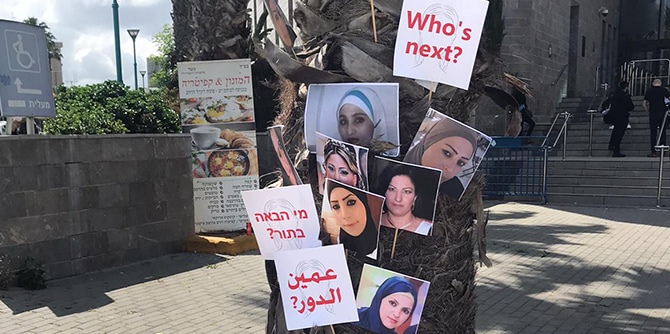

מתחילת משבר קורונה נרצחו בישראל 13 נשים ערביות ויהודיות, והדיווחים על אלימות במשפחה מרקיעים שחקים. באפריל בלבד, יותר מ-250 נשים פנו לנע"ם – נשים ערבית במרכז, כדי לקבל עזרה בהתמודדות עם אלימות במשפחה, קשיים כלכליים ומצוקה רגשית. הארגון נמצא במירוץ מתמשך נגד הזמן למניעת הרצח הבא.
ככל שהמצב הסלים, ולמרות החשש מהידבקות, הפגינו ב-1 ביוני בתל אביב כ-12,000 בני אדם במחאה על רצח נשים, על אלימות מגדרית ועל חוסר ההגנה ואוזלת היד של הממשלה והרשויות המקומיות.
סמאח סלאימה, פעילה חברתית ומנהלת נע"ם, התבקשה לשאת דברים בהפגנה, ואלפים רבים נוספים צפו בה ברשת וקראו את דבריה בכלי התקשורת. פרופסור דפנה האקר מאוניברסיטת תל אביב כתבה אחר כך כי את הנאום הזה צריך ללמוד כל ילד במדינה, ועליו להיות חלק מתוכניות הלימודים בחינוך מגדרי בבתי הספר התיכוניים.

נע"ם – ארגון מבוסס קהילה הפועל בערים יהודיות-ערביות מעורבות – רמלה, לוד ויפו, שואף לתמוך בנשים ולחסל את תופעת רצח הנשים, המכונה בטעות "רצח על רקע כבוד המשפחה". הארגון נדרש לפעול במקומות שבהם הסיוע העירוני, הממשלתי וההומניטרי בולט בהיעדרו. בתחילת הסגר בישראל השיק הארגון תוכנית חירום המנסה לתת מענה לצרכים הדחופים של נשים בסיכון, בשילוב עם מענה שפותח על-ידי קואליציה לאומית של קבוצות נשים ערביות.
מתוך הבנת הדחיפות העניקה קרן מנדל לעמותת נע"ם תמיכה ביוזמת החירום שלה, הנותנת מענה לצרכים קריטיים בארבעה תחומים עיקריים בתקופה זו: הארכת שעות העבודה של העובדים הסוציאליים שלה משלושה לחמישה ימים בשבוע; מתן שוברים לנשים ערביות ולילדיהן הנמצאים תחת איום, כדי לאפשר להם לשהות במלונות ריקים או באכסניות עד שימצאו דיור (אין די מקלטים לנשים); אספקת חבילות מזון למשפחות נזקקות, במיוחד אימהות יחידניות (כבר חולקו יותר מ-150 חבילות); הפעלת קמפיינים פרסומיים כדי להודיע לנשים שאפשר לקבל עזרה במרחק שיחת טלפון או הקלקה, והדפסת עלוני מידע עם פרטי הקשר שיפורסמו במקומות ציבוריים.
באפריל, בעקבות הרצח האכזרי של זמזם מחאמיד, צעירה ערבייה שנורתה למוות ברחוב על-ידי בן משפחה, ארגנה עמותת נע"ם קואליציה של ארגוני צדק חברתי להפגנה וירטואלית נגד רצח נשים. מעל 100,000 בני אדם השתתפו בה באמצעות המדיה החברתית. במהלך הסגר נאלצה זמזם, נערה במצוקה, לחזור למשפחתה, שם מצאה את עצמה סגורה עם האיש שרצח אותה.
צעירה ערבייה אחרת שחייה היו בסכנה נמצאה במהלך חלוקת חבילות המזון. חברי נע"ם הובלו לדירתה, שבה הסתתרה האישה ממשפחתה. לפני הסגר תכננה האישה לברוח מהארץ, וכעת מצאה את עצמה ללא עבודה, כסף או אוכל. ברגע שחברי הארגון הגיעו לביתה, מיהרה בתה בת הארבע לאחוז בכיכר לחם והחלה לאכול אותה ברעב עז, באופן שהבהיר שלא אכלה במשך ימים.
במקרה שאירע לאחרונה הועלתה לפייסבוק תמונה של צעירה שסבלה מחבלות נוראות בכל גופה. כשהארגון איתר אותה, לאחר מאמצים רבים, התברר שהיא אם בת 21 לילדה בת 3. האישה נכלאה בביתה על-ידי בעלה, שהכה אותה מדי יום. יחד עם שוטרים ואנשי רווחה העבירה נע"ם את האם והילדה למקלט לנשים נפגעות אלימות.
נשים פנו לנע"ם גם לקבלת תמיכה רגשית. אנשי העמותה עודדו סטודנטית שסבלה מאיומים קבועים מצד אחיה המתעלל לפנות לטיפול. הם דאגו שתקיים פגישות מקוונות שבועיות עם פסיכותרפיסט. חברי הארגון עוקבים מקרוב אחר 19 נשים במצבים דומים כדי להבטיח שיקבלו תמיכה מאנשי מקצוע בתחום בריאות הנפש.
ב-8 ביוני השתתפה עמותת נע"ם בקמפיין נרחב בשפה הערבית כדי להזכיר לאנשים, במיוחד במהלך המשבר, שעליהם לדווח על חשד להתעללות ולעודד חברים, בני משפחה ושכנים לסייע זה לזה. הקמפיין כלל שני סרטונים רבי עוצמה.
לאחרונה מונתה סמאח סלאימה להיות חברה בוועדה אד-הוק במשרד ראש הממשלה, שהוקמה כדי לשפר את שירותי הרווחה לנשים ובני נוער במהלך משבר הנגיף. במסגרת זו היא מציגה את הצרכים המיוחדים של נשים ערביות. היא אף סוקרת את המדיניות הננקטת במדינות אחרות שגם בהן צעדי מניעת ההתפשטות של נגיף קורונה הגבירו את האיום על נשים. כעת היא מנסה להעריך איזה מהצעדים יהיה רלוונטי ליישום גם בישראל.
בשנת 2018 הופיעה סמאח סלאימה ברשימת עשרת הפעילים החברתיים המשפיעים ביותר בישראל של עיתון "ידיעות אחרונות". בשנת 2019 היא נבחרה לכהן כחברת הוועד המנהל של האוניברסיטה העברית. בשנת 2020 הוענק לסמאח סלאימה פרס רפפורט על עשייה נשית רבת-שנים. היא אף מתראיינת באופן קבוע בערוצי חדשות מקומיים בנושאים הקשורים למעמד האישה בחברה.
{kind=link}